<div class="politicas-de-privacidad">
  
  <section class="concept-container">
    <div class="container">
      <a
        class="back-home"
        [routerLink]="'/home'"
      >
        <
          Volver
          </a
        >

          <div class="left-col">
            
          </div>

          <div class="text-container">
            <h2>POLÍTICA DE TRATAMIENTO DE DATOS PERSONALES (POLÍTICA DE PRIVACIDAD)</h2>

            <p>
              FUNIAS APP es un servicio ofrecido por la empresa GEOS INGENIERÍA S.A.S, somos una empresa de consultoría
              especializada en recurso hídrico subterráneo, registrada con número de identificación NIT 901.086.801-0,
              de la
              ciudad de Medellín. La APP FUNIAS, busca automatizar los procesos de toma de información en campo basados
              en
              el
              Formulario Único Nacional de Inventario de Puntos de Agua Subterránea, creado el por Ministerio de
              Ambiente y
              Desarrollo Sostenible Colombiano, utilizado en los componentes hidrogeológicos para Estudios de Impacto
              Ambiental de proyectos mineros, energéticos, viales, etc.
            </p>
            <p>
              GEOS INGENIERÍA S.A.S., con la finalidad de dar cumplimiento estricto a la normatividad vigente de
              protección
              de
              Datos Personales, de acuerdo a lo establecido en la Ley 1581 del 2012, Decreto 1074 de 2015 y demás
              disposiciones que las modifiquen, adicionen o complementen presenta la siguiente POLÍTICA DE PROTECCIÓN Y
              TRATAMIENTO DE DATOS PERSONALES (en adelante “Política de Tratamiento”) con el propósito de proteger la
              información personal brindada por los Titulares que tengan relación con GEOS INGENIERÍA S.A.S. como lo son
              socios, proveedores, clientes, empleados, colaboradores y cualquier otra persona natural de la cual GEOS
              INGENIERÍA S.A.S., obtenga, recolecte, procese o trate datos personales, sea que dicho tratamiento sea
              realizado
              por GEOS INGENIERÍA S.A.S. o por terceras personas que lo hagan por encargo de ésta.
            </p>
            <p>
              GEOS INGENIERÍA S.A.S reconoce la necesidad de tratar los datos de manera adecuada y legal. Nos
              comprometemos
              a
              cumplir con nuestras obligaciones legales con respecto a todos los datos personales que manejamos según se
              establece en esta política.
            </p>
            <p>
              La Política de Tratamiento tiene como objeto proteger el derecho constitucional del Habeas Data que tienen
              todas
              las personas para conocer, actualizar, y rectificar la información que se haya recogido y almacenado en
              las
              distintas bases de datos de GEOS INGENIERÍA S.A.S., y en virtud del cumplimiento de dicho derecho sólo
              recolecta
              y da Tratamiento a Datos Personales, cuando así haya sido autorizado previamente por su Titular,
              implementando
              para tal efecto, medidas claras sobre confidencialidad y privacidad de los Datos Personales. Así mismo,
              detalla
              los lineamientos generales corporativos que se tienen en cuenta con el fin de proteger los Datos
              Personales de
              los Titulares, las finalidades de Tratamiento de la información, el área responsable de atender las quejas
              y
              reclamos, y los procedimientos que se deben agotar para conocer actualizar, rectificar y suprimir la
              información
              y los respectivos canales para que estos puedan ejercerlos.
            </p>

            <h3>
              SEGURIDAD
            </h3>
            <p>
              En GEOS INGENIERÍA S.A.S nos tomamos muy en serio la seguridad de sus datos. Con esto en mente, elegimos a
              un
              líder en servicios de computación en la nube, Heroku. Todos los datos en vivo de APP FUNIAS se almacenan
              dentro
              de Heroku.
            </p>
            <p>
              Hay muchas razones por las que elegimos construir APP FUNIAS en la infraestructura de Heroku, y la
              seguridad y
              confiabilidad son las principales.
            </p>
            <p>
              Heroku es una plataforma de computación en la nube que ofrece diversos servicios de alojamiento y
              despliegue
              de
              aplicaciones web, proporciona docenas de características de seguridad críticas específicamente diseñadas
              para
              mantener sus datos seguros, protegidos y bajo su control.
            </p>
            <p>
              El sistema APP FUNIAS es administrado y alojado por GEOS INGENIERÍA S.A.S. Un máximo de dos empleados de
              GEOS
              INGENIERÍA S.A.S solo tienen acceso completo a la plataforma APP FUNIAS.
            </p>
            <p>
              Hacemos todo lo posible para proteger APP FUNIAS y a nuestros clientes contra el acceso no autorizado, así
              como
              para prevenir la alteración, divulgación o destrucción no autorizada de la información gestionada por APP
              FUNIAS.
            </p>
            <h3>
              EN PARTICULAR:
            </h3>
            <p>
              Revisamos nuestras prácticas de recopilación, almacenamiento y procesamiento de información para proteger
              contra
              el acceso no autorizado a nuestros sistemas.
              Restringimos el acceso a información personal a nuestros empleados, contratistas y agentes que necesitan
              conocer
              esa información para procesarla para nosotros, y que están sujetos a estrictas obligaciones contractuales
              de
              confidencialidad y pueden ser disciplinados o despedidos si no cumplen con estas obligaciones.
            </p>
            <h3>
              APLICACIÓN
            </h3>
            <p>
              Nuestra Política de Privacidad se aplica a todos los servicios ofrecidos por GEOS INGENIERÍA S.A.S y sus
              afiliados, incluidos los servicios ofrecidos en otros sitios, pero excluye los servicios que tienen
              políticas
              de
              privacidad separadas que no incorporan esta Política de Privacidad. Nuestra Política de Privacidad no es
              aplicable a los servicios ofrecidos por otras empresas o individuos, incluidos productos en línea o sitios
              que
              pueden ser mostrados a usted en los resultados de búsqueda, o sitios que incluyen servicios de GEOS
              INGENIERÍA
              S.A.S, o cualquier sitio vinculado desde nuestros servicios. Nuestra Política de Privacidad no cubre las
              prácticas de información de otras empresas y organizaciones que publicitan nuestros servicios.
            </p>
            <p>
              Para los usuarios de cualquiera de nuestras aplicaciones en línea, los términos y condiciones de uso,
              incluidos
              los detalles sobre privacidad, seguridad y protección de datos, están establecidos en nuestros Términos y
              Condiciones.
            </p>
            <p>
              El acuerdo de licencia se proporciona para proteger los derechos de los clientes y los de GEOS INGENIERÍA
              S.A.S
              y para garantizar que todos los clientes y usuarios sean conscientes de sus responsabilidades, así como de
              sus
              obligaciones. La información cargada en la base de datos en línea es tanto para los clientes como para los
              empleados de los clientes, los subcontratistas o los agentes del cliente son responsabilidad del cliente y
              de
              sus usuarios administrativos. GEOS INGENIERÍA S.A.S recomienda que todos los clientes muestren la
              diligencia
              adecuada al gestionar datos sensibles.
            </p>
            <h3>
              APLICACIÓN DE LA LEY
            </h3>
            <p>
              Revisamos regularmente que cumplimos con nuestra Política de Privacidad en la mejor medida de nuestras
              posibilidades.
            </p>
            <p>
              Cuando recibimos quejas formales por escrito, contactaremos a la persona que hizo la queja inicial para
              hacer
              un
              seguimiento de manera oportuna. Trabajamos con las autoridades regulatorias adecuadas, incluidas las
              autoridades
              locales de protección de datos, para resolver cualquier queja relacionada con la transferencia de datos
              personales que no podamos resolver directamente con nuestros usuarios.
            </p>
            <h3>
              SIEMPRE RESPALDADO
            </h3>
            <p>
              GEOS INGENIERÍA S.A.S realiza automáticamente una copia de seguridad de sus datos todos los días en caso
              de
              cualquier problema que pueda surgir. Como APP FUNIAS es un servicio basado en la nube, pero también
              registra
              información offline, se recomienda hacer una copia de seguridad de sus datos en línea.
            </p>
            <h3>
              SEGURIDAD Y FIABILIDAD DE CLASE MUNDIAL
            </h3>
            <p>
              Habiendo construido APP FUNIAS en la plataforma de Heroku, podemos y tenemos confianza en sus
              excepcionales
              garantías de tiempo de actividad, así como en su capacidad para seguir siendo resiliente y receptivo a
              fallos
              del sistema.
            </p>
            <h3>
              PROPIEDAD DE LOS DATOS
            </h3>
            <p>
              Todos los datos ingresados en APP FUNIAS mientras se completan las Respuestas son gestionados y propiedad
              del
              administrador de la cuenta principal, protegemos sus datos de cerca y no vendemos ni compartimos su
              información
              con terceros sin su consentimiento.
            </p>
            <h3>
              CÓMO RECOPILAMOS Y USAMOS SU INFORMACIÓN
            </h3>
            <h4>
              INFORMACIÓN DE LA CUENTA
            </h4>
            <p>
              Cuando crea una cuenta, recopilamos cierta "información personal identificable". Esto incluye su nombre de
              usuario, dirección de correo electrónico, nombre, apellido, zona horaria y dirección IP. No se tendrá
              acceso a
              la información de pago, será a través de las tiendas.
            </p>
            <h4>
              INFORMACIÓN QUE RECOPILAMOS
            </h4>
            <p>
              Recopilamos información para proporcionar mejores servicios a todos nuestros usuarios, que pueden ir desde
              saber
              información básica como nombre de usuarios, hasta información más compleja como qué contenido es más
              importante
              para usted.
            </p>
            <h4>
              Recopilamos información de las siguientes maneras:
            </h4>
            <p>
              Información que nos proporciona. Recopilamos información sobre usted y su empresa cuando se registra para
              obtener una cuenta con nosotros, crea o modifica su perfil, usa, accede o interactúa con nuestros
              servicios o
              nuestros sitios web (incluido, entre otros, cuando carga, descarga, colabora o comparte contenido). Este
              contenido incluye cualquier información personal u otra información sensible que elija incluir. El
              servicio
              APP
              FUNIAS le solicita que se registre para obtener una cuenta con nosotros. Podemos presentar su nombre,
              dirección
              de correo electrónico o imagen a otros usuarios en su organización, o de otra manera asociados con su
              cuenta
              para ayudar en compartir o recomendaciones. También recibimos toda la información que usted o sus colegas
              ingresan en los formularios.
            </p>
            <p>
              Información que obtenemos de su uso de nuestros servicios. Podemos recopilar información sobre los
              servicios
              que
              utiliza y cómo los utiliza. Esta información incluye:
              Información del dispositivo: podemos recopilar información específica del dispositivo (como su modelo de
              hardware, versión del sistema operativo, identificadores de dispositivo únicos e información de la red
              móvil).
              Solo asociamos su identificación de dispositivo o número de teléfono con su cuenta con fines de
              diagnóstico.
            </p>
            <p>
              Información de inicio de sesión: cuando usa nuestros servicios o ve contenido proporcionado por nosotros,
              es
              posible que recopilemos y almacenemos automáticamente cierta información en registros del servidor. Esto
              puede
              incluir:
              - detalles sobre cómo utilizó nuestro servicio, como su tarea completada
              - dirección de Protocolo de Internet
              - información del evento del dispositivo, como bloqueos, actividad del sistema, configuraciones de
              hardware,
              tipo de navegador, idioma del navegador, fecha y hora de su solicitud.
              - También usamos herramientas de terceros como Google Analytics y Crashlytics.
            </p>
            <h4>
              Cómo Usamos la Información que Recopilamos
            </h4>
            <p>
              Podemos usar la información que recopilamos, incluida la información personal de los usuarios registrados
              y la
              información de transacción, de todos nuestros servicios en uno o más de los lugares en los que APP FUNIAS
              tiene
              operaciones o de otra manera realiza negocios para los siguientes fines:
              - Para fines internos y relacionados con el servicio, como proporcionar, mantener, proteger, mejorar y
              personalizar nuestros servicios, desarrollar nuevos servicios y proteger los derechos, propiedad o
              seguridad
              de
              APP FUNIAS y nuestros usuarios.
              - Para hacer cumplir la Política de Privacidad y nuestros términos y condiciones de uso de nuestro
              servicio y
              sitio web.
              - Para comunicarnos con usted con el fin de proporcionarle información que creemos que puede ser útil o
              relevante para usted.
              - Para monitorear y analizar tendencias, uso y actividades relacionadas con nuestros servicios y para
              fines de
              marketing o publicidad o para ofrecerle contenido personalizado.
              - Para investigar y prevenir transacciones fraudulentas, acceso o uso no autorizado de nuestros servicios
              y
              otras actividades ilegales o inusuales.
              - Cuando se ponga en contacto con nosotros, para mantener un registro de su comunicación para ayudar a
              resolver
              cualquier problema que pueda estar enfrentando. Podemos contactarlo nuevamente específicamente para
              informarle
              una actualización sobre su consulta original.
              - En caso de que pueda informar sobre una solicitud de función, problema o error. Podemos acceder a su
              cuenta
              para revisar sus datos para revisar sus requisitos.
              - De cookies y otras tecnologías, para mejorar su experiencia de usuario y la calidad general de nuestros
              servicios.
              - Cuando resolvemos problemas con el servicio APP FUNIAS, es posible que necesitemos datos adicionales
              (por
              ejemplo, la base de datos de la aplicación APP FUNIAS). Esto será en forma de un informe de error, informe
              de
              error que usted, como cliente, ha enviado o un chequeo de diagnóstico automatizado realizado por APP
              FUNIAS.
              Le pediremos su consentimiento antes de usar la información para un propósito que no sea el descrito en
              esta
              Política de Privacidad.
              En escenarios de resolución de problemas, APP FUNIAS puede procesar información personal de nuestra
              plataforma
              en nuestro correo electrónico ingo@geosingenieria.com.
            </p>
            <h4>
              Información que Compartimos con Terceros
            </h4>
            <p>
              No compartimos información personal con otras empresas, organizaciones e individuos fuera de la
              organización
              GEOS INGENIERÍA S.A.S.
            </p>
            <h3>
              PRINCIPIOS RECTORES PARA EL TRATAMIENTO DE DATOS PERSONALES – LEY COLOMBIANA
            </h3>
            <p>
              Según lo establecido en el Título II de la Ley Estatutaria 1581 de 2012, la protección de datos personales
              se
              regirá por la aplicación armónica e integral de los siguientes principios:
            </p>
            <p>
              Principio de legalidad en el tratamiento de datos personales: El tratamiento de datos personales a que se
              refiere la Ley Estatutaria 1581 de 2012 es una actividad reglada que debe sujetarse a lo establecido en
              ella y
              en las demás disposiciones que la desarrollen.
            </p>
            <p>
              Principio de finalidad: El tratamiento de los datos personales debe obedecer a una finalidad legítima de
              acuerdo
              con la Constitución y la ley, la cual debe ser informada al Titular.
            </p>
            <p>
              Principio de libertad: El tratamiento de los datos personales sólo puede ejercerse con el consentimiento,
              previo, expreso e informado del Titular. Los datos personales no podrán ser obtenidos o divulgados sin
              previa
              autorización, o en ausencia de mandato legal o judicial que releve el consentimiento.
            </p>
            <p>
              Principio de veracidad o calidad: La información sujeta a tratamiento debe ser veraz, completa, exacta,
              actualizada, comprobable y comprensible. Se prohíbe el Tratamiento de datos parciales, incompletos,
              fraccionados
              o que induzcan a error.
            </p>
            <p>
              Principio de transparencia: En el Tratamiento de los datos personales debe garantizarse el derecho del
              Titular
              a
              obtener del Responsable del tratamiento o del Encargado del tratamiento, en cualquier momento y sin
              restricciones, información acerca de la existencia de datos que le conciernan.
            </p>
            <p>
              Principio de seguridad: La información sujeta a tratamiento por el Responsable del Tratamiento o Encargado
              del
              tratamiento a que se refiere la Ley Estatutaria 1581 de 2012, se deberá manejar con las medidas técnicas,
              humanas y administrativas que sean necesarias para otorgar seguridad a los registros evitando su
              adulteración,
              pérdida, consulta, uso o acceso no autorizado o fraudulento.
            </p>
            <p>
              Principio de confidencialidad: Todas las personas que intervengan en el tratamiento de datos personales
              que no
              tengan la naturaleza de públicos están obligadas a garantizar la reserva de la información, inclusive
              después
              de
              finalizada su relación con alguna de las labores que comprende el tratamiento, pudiendo sólo realizar
              suministro
              o comunicación de datos personales cuando ello corresponda al desarrollo de las actividades autorizadas en
              la
              Ley Estatutaria 1581 de 2012 y en los términos de la misma.
            </p>
            <p>
              Principio de acceso y circulación restringida: El tratamiento se sujeta a los límites que se derivan de la
              naturaleza de los datos personales, de las disposiciones de la Ley Estatutaria 1581 de 2012 y la
              Constitución.
              En este sentido, el tratamiento sólo podrá hacerse por personas autorizadas por el Titular y/o por las
              personas
              previstas en la mencionada ley.
            </p>
            <h3>
              VIGENCIA
            </h3>
            <p>
              Los Datos Personales que sean almacenados, utilizados o transmitidos permanecerán en las bases de datos de
              GEOS
              INGENIERÍA S.A.S. durante el tiempo que sea necesario para cumplir con las finalidades expuestas en este
              manual
              o para que la Empresa pueda cumplir con sus deberes legales.
            </p>
            <p>
              Sin embargo, la información será revisada cada año para verificar la veracidad del dato y finalidad de
              seguir
              con su tratamiento.
            </p>
            <p>
              De ser necesario GEOS INGENIERÍA S.A.S. se reserva el derecho a modificar la presente Política de forma
              unilateral.
            </p>
          </div>
    </div>
  </section>
</div>
